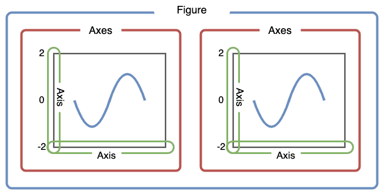

import os
import geopandas as gpd
import matplotlib.pyplot as plt9 geopandas
GeoPandas is a Python library that extends the pandas library by adding support for geospatial data. In this lesson we will introduce the geopandas library to work with vector data. We will also make our first map.
About the data
Wild pigs (Sus scrofa) are a destructive invasive species in California, causing significant environmental and agricultural damage. Introduced to the region in the 1700s, they have since spread across the state, impacting native ecosystems through habitat destruction, soil disturbance due to their rooting behavior, and competition with native wildlife for food [1]. This widespread damage has made managing wild pig populations a critical issue for conservation and agricultural communities in California.
In this lesson we will use simplified point data about wild pig sightings in California from the Global Biodiversity Information Facility (GBIF). GBIF is an international network and data platform that provides open access to biodiversity data from around the world. By aggregating data from multiple sources, including museums, research institutions, and citizen science initiatives, GBIF enables scientists, policymakers, and the public to explore and analyze species distribution and environmental trends.
The data we will use today has been simplified from the complete Sus scrofa occurrencies data [2] accessed through the GBIF website.
Reproducible file paths
In this lesson we will introduce three Python packages:
geopandas[3]: a package that extendspandasto work with geospatial data. This is the main package we will be working with in the next few lessons.os: a package that provides functions for interacting with the operating system, allowing us to perform tasks like file manipulation in a platform-independent way.matplotlib[4]: one of the most popular and widely used Python libraries for data visualization.
Let’s start by importing these packages:
To import our data we will first use the os package to create a reproducible file path:
fp = os.path.join('data','gbif_sus_scrofa_california','gbif_sus_scrofa_california.shp')
fp'data/gbif_sus_scrofa_california/gbif_sus_scrofa_california.shp'Using the os.path.join() function allows us to create file paths that work on any operating system. Each operating system uses a different way to separate folders in a path (e.g., Windows uses backslashes \, while macOS and Linux use forward slashes /). By using os.path.join(), Python automatically handles the correct separator for the operating system you’re working on. This avoids errors and makes your code more portable.
We can then use this file path to read in a shapefile with geopandas by using the geopandas.read_file() function:
pigs = gpd.read_file(fp)
pigs.head()| gbifID | species | state | individual | day | month | year | inst | collection | catalogNum | identified | geometry | |
|---|---|---|---|---|---|---|---|---|---|---|---|---|
| 0 | 899953814 | Sus scrofa | California | NaN | 22.0 | 3.0 | 2014.0 | iNaturalist | Observations | 581956 | edwardrooks | POINT (-121.53812 37.08846) |
| 1 | 899951348 | Sus scrofa | California | NaN | 9.0 | 6.0 | 2007.0 | iNaturalist | Observations | 576047 | Bruce Freeman | POINT (-120.54942 35.47354) |
| 2 | 896560733 | Sus scrofa | California | NaN | 20.0 | 12.0 | 1937.0 | MVZ | Hild | MVZ:Hild:195 | Museum of Vertebrate Zoology, University of Ca... | POINT (-122.27063 37.87610) |
| 3 | 896559958 | Sus scrofa | California | NaN | 1.0 | 4.0 | 1969.0 | MVZ | Hild | MVZ:Hild:1213 | Museum of Vertebrate Zoology, University of Ca... | POINT (-121.82297 38.44543) |
| 4 | 896559722 | Sus scrofa | California | NaN | 1.0 | 1.0 | 1961.0 | MVZ | Hild | MVZ:Hild:1004 | Museum of Vertebrate Zoology, University of Ca... | POINT (-121.74559 38.54882) |
One shapefile = multiple files
Although the parameter for geopandas.read_file() is only the file with .shp extension, remember that we need to have at least the .shx and .dbf files in the same directory as the .shp to read in the data.
Check-in
Create a file path using os.path.join() to import the shapefile of the California state boundary as a geopandas.GeoDataFrame. Once imported, take a look at the data.
GeoSeries and GeoDataFrame
The core data structure in GeoPandas is the geopandas.GeoDataFrame. We can think of it as a pandas.DataFrame with a dedicated geometry column that can perform spatial operations.
The geometry column in a geopandas.GeoDataFrame holds the geometry (point, polygon, etc) of each spatial feature. This geometry column is of type geopandas.GeoSeries. Columns in the geopandas.GeoDataFrame with attributes about the features are pandas.Series like in a regular pandas.DataFrame.
Example
First, notice that the leftmost column of the pigs geo-dataframe is a column named geometry whose values indicate points:
pigs.head(3)| gbifID | species | state | individual | day | month | year | inst | collection | catalogNum | identified | geometry | |
|---|---|---|---|---|---|---|---|---|---|---|---|---|
| 0 | 899953814 | Sus scrofa | California | NaN | 22.0 | 3.0 | 2014.0 | iNaturalist | Observations | 581956 | edwardrooks | POINT (-121.53812 37.08846) |
| 1 | 899951348 | Sus scrofa | California | NaN | 9.0 | 6.0 | 2007.0 | iNaturalist | Observations | 576047 | Bruce Freeman | POINT (-120.54942 35.47354) |
| 2 | 896560733 | Sus scrofa | California | NaN | 20.0 | 12.0 | 1937.0 | MVZ | Hild | MVZ:Hild:195 | Museum of Vertebrate Zoology, University of Ca... | POINT (-122.27063 37.87610) |
As usual, we can check the type of our objects using the type Python function:
# Check the data type of the pigs dataframe
print(type(pigs))
# Check the data type of the geometry column
print(type(pigs.geometry))
# Check the data type of the gbifID column
print(type(pigs.gbifID))<class 'geopandas.geodataframe.GeoDataFrame'>
<class 'geopandas.geoseries.GeoSeries'>
<class 'pandas.core.series.Series'>The data type of the geometry column is also reflected when we look at the data types of the values in each column:
# Check the data type of each column
pigs.dtypesgbifID int64
species object
state object
individual float64
day float64
month float64
year float64
inst object
collection object
catalogNum object
identified object
geometry geometry
dtype: objectWe can also check the type of each element in the geometry column using the geom_type attribute of a geopandas.GeoDataFrame:
pigs.geom_type0 Point
1 Point
2 Point
3 Point
4 Point
...
1041 Point
1042 Point
1043 Point
1044 Point
1045 Point
Length: 1046, dtype: object
Check-in
What is the geometry type of the single feature in the California state boundary?
CRS and extent
Two other important attributes of a geopandas.GeoDataFrame are its coordinate reference system (CRS) and its extent.
We can think of the coordinate reference system (CRS) as the instructions to locate each spatial feature of our data frame on the surface of the Earth. We access the CRS of a geopandas.GeoDataFrame using the crs attribute:
# Access the CRS of the GeoDataFrame
pigs.crs<Geographic 2D CRS: EPSG:4326>
Name: WGS 84
Axis Info [ellipsoidal]:
- Lat[north]: Geodetic latitude (degree)
- Lon[east]: Geodetic longitude (degree)
Area of Use:
- name: World.
- bounds: (-180.0, -90.0, 180.0, 90.0)
Datum: World Geodetic System 1984 ensemble
- Ellipsoid: WGS 84
- Prime Meridian: GreenwichThe extent of the geo-dataframe is the bounding box covering all the spatial features in our geo-dataframe. This is formed by finding the points that are furthest west, east, south, and north.

We access the extent of a geopandas.GeoDataFrame using the total_bounds attribute:
# Obtain the geographic extent of the geo-dataframe
pigs.total_boundsarray([-124.29448 , 32.593433, -115.4356 , 40.934296])
Check-in
Print the CRS, and extent of the California boundary.
Data wrangling
GeoPandas is conveniently built on top of pandas, so we may use everything we have learned about data selection, wrangling, and modification for a pandas.DataFrame to wrange geopandas.GeoDataFrames.
Example
We only want to use recent data for wild pig observations. A quick check shows that this dataframe has data since 1818:
# Examine pig observation by year
pigs['year'].value_counts().sort_index()year
1818.0 31
1910.0 1
1925.0 1
1927.0 4
1929.0 3
...
2019.0 101
2020.0 159
2021.0 164
2022.0 185
2023.0 98
Name: count, Length: 61, dtype: int64We can use our usual data selection to get data from 2020 onwards:
# Select data from 2020 onwards
pigs_recent = pigs[pigs.year>=2020]
# Check length of original dataframe
print('Total number of observations: ' , len(pigs))
# Check length of new dataframe
print('Number of observations since 2020: ' , len(pigs_recent))Total number of observations: 1046
Number of observations since 2020: 606Create a map
plot()
Similarly to a pandas.DataFrame, a geopandas.GeoDataFrame has a plot() method that we can call directly to create a quick view of our data. The geospatial information of the geopandas.GeoDataFrame will be used to create the axes of the plot.
Example
Let us take a quick look at our recent pigs data:
pigs_recent.plot()matplotlib’s fig and ax
Going forward, we will make more complex visualizations where we add different layers to a graph and customize it. To do this, we will use the matplotlib Python library for creating visualizations. We can interact with matplotlib via its pyplot interface, which we imported at the top of the notebook.
Matplotlib graphs the data in a figure which can have one or more axes. The axes is only the area specified by the \(x\) axis and \(y\) axis and what is plotted in it, while the figure can icnlude multiple axes in it.

To create a new blank figure:
- Initialize a new figure and axes by calling
pyplot’ssubplots()function, and - show the graph using
plt.show():
# Initialize empyt figure (fig) and axis (ax)
fig, ax = plt.subplots()
# Display figure
plt.show()Notice that plt.subplots() is a function that returns two objects, when we call it, get a figure fig with a single empty axis ax. We can think of this step as setting a new blank canvas on which we will paint upon.
Adding a layer
When using matplotlib, it can be useful to think of creating a plot as adding layers to an axis. The general syntax to plot a datafram df onto an axis is:
# Initialize empyt figure and axis
fig, ax = plt.subplots()
# Plot a df on the ax axis
df.plot(ax=ax, # Add plot to axis
...) # Other arguments for plot function
# Display figure
plt.show()Example
The first layer that we want to add to our axis is the pigs_recent point data. We can plot our data using matplotlib like this:
# Initialize empyt figure and axis
fig, ax = plt.subplots()
# Add pigs point plot to our figure's axis
pigs_recent.plot(ax=ax)
# Display figure
plt.show()Customization
Matplotlib allows for a lot of customization. Some of it can be done directly in the plot() method for the dataframe (like we’ve done when ploting data using pandas), while other is done by updating attributes of the axis ax. The following diagram shows some examples of elements in the axis that can be updated.

Example
Some basic customization for our pigs data could looke like this:
# Initialize empty figure
fig, ax = plt.subplots()
# Add data to axis
pigs_recent.plot(ax=ax, # Add plot to axis
alpha=0.5, # Adjust transparency
color='brown' # Update point color
)
# Update axis
ax.set_title('Reported "Sus scrofa" sightings in CA (2020-2023)')
ax.set_xlabel('Longitude')
ax.set_ylabel('Latitude')
# Display figure
plt.show()
Check-in
Add the California state boundary to the plot so the boundary appears behind the points as below. Don’t forget to customize your graph!
References
[1]
J. A. Finzel and R. A. Bladwin, “Wild Pigs - Pest Notes Publication 74170.” University of California Agriculture; Natural Resources - Satewide Integrated Pest Management Program, Jul. 2015. Available: https://ipm.ucanr.edu/legacy_assets/PDF/PESTNOTES/pnwildpigs.pdf. [Accessed: Oct. 22, 2024]
[2]
GBIF.Org User, “Occurrence Download.” The Global Biodiversity Information Facility, 2023. doi: 10.15468/DL.QAVHWP. Available: https://www.gbif.org/occurrence/download/0023426-231002084531237
[3]
K. Jordahl et al., “Geopandas/geopandas: v0.8.1.” Zenodo, Jul. 2020. doi: 10.5281/ZENODO.3946761. Available: https://zenodo.org/record/3946761. [Accessed: Oct. 22, 2024]
[4]
J. D. Hunter, “Matplotlib: A 2D graphics environment,” Computing in Science & Engineering, vol. 9, no. 3, pp. 90–95, 2007, doi: 10.1109/MCSE.2007.55